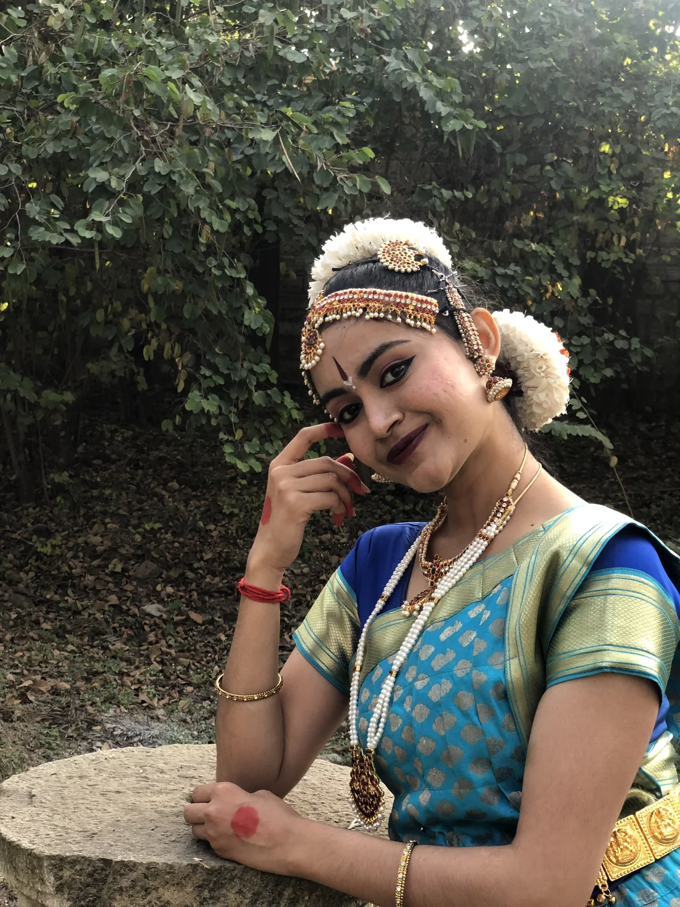
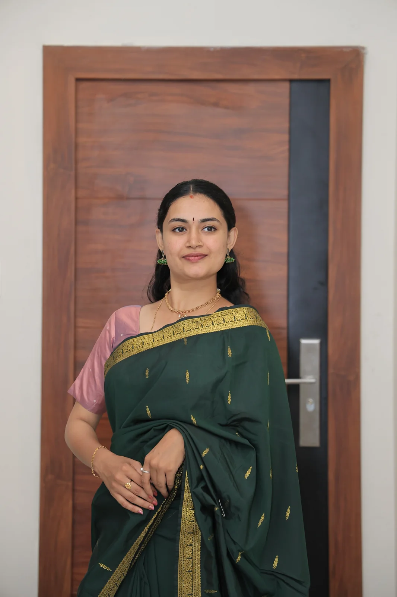
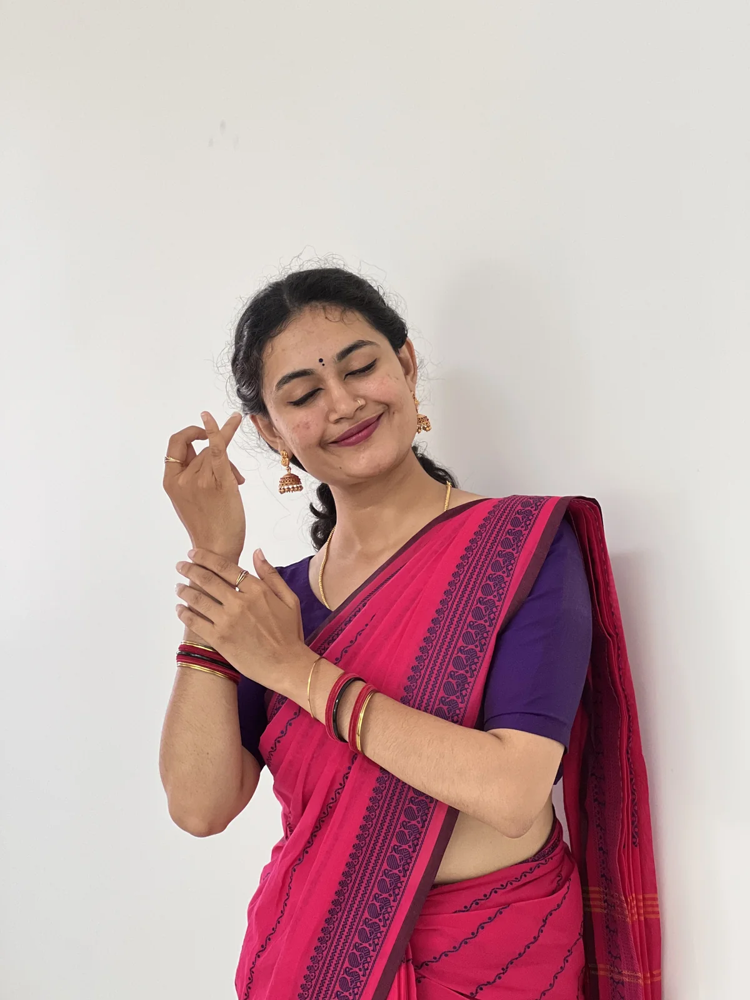

01 / The artiste
A life shaped
by dance.
Vidushi Krithi Kailar | Bharatanatyam artiste, choreographer and teacher.

Uppinangady roots. Mysuru practice.
Rooted in tradition.
Alive in performance.
From Uppinangady in Dakshina Kannada, Krithi Kailar brings more than sixteen years of training to her Bharatanatyam practice. Her learning draws on the Pandanallur and Kalakshetra bānis within the Guru-Śiṣya Paramparā.
A Doordarshan B-Grade artiste, she has passed the Post-Vidwath examination with 90% marks, earning distinction. She is currently pursuing an M.A. in Bharatanatyam at Karnataka State Dr. Gangubai Hangal Music and Performing Arts University.
Her study of Karnataka Śāstrīya Saṅgīta deepens the relationship between movement, rāga, tāla and sāhitya. The Nāṭyaśāstra and Advaita Vedānta inform her understanding of dance as Darśana Kalā.
She is the founder of Akashabharati, through which she teaches students across the country.
Follow her journeyPractice & inquiry
Śāstra
& Prayoga.
Alongside dance, Krithi completed her BBA LL.B. (Hons.) at JSS Law College, Mysuru in 2026, securing fifth rank. Her interests meet at the intersection of law, saṃskṛti and the traditional arts.
Her inquiry encompasses abhinaya, Rasa and Dhvani, temple traditions, the Guru-Śiṣya Paramparā and Advaita Vedānta.
The thought behind the art
